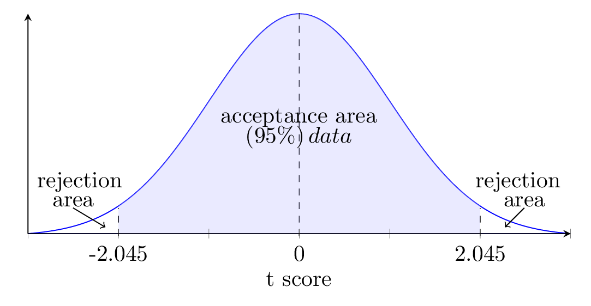

One sample t -test: In the population, the average IQ is 100. A team of researcher want to test a new medication to see if it has either a positive or negative effect on intelligence or no effect at all. A sample of 30 participants who have taken the medication has a mean of 140 with a standard deviation of 20. Did the medication effect intelligence? [CI=95%]
Solution.
Given: \(\mu = 100, \, n = 30, \, \bar{x} = 140, \, s= 20, \, \alpha = 1-CI =1-0.95 =0.05.\)
Null hypothesis, \(H_o: \, \mu = 100\)
Alternative hypothesis, \(H_a: \, \mu \neq 100\) [two-tail test]
Significance value, \(\alpha = 0.05\)
Degree of freedon, \(d_f=n-1 = 30-1 =29.\)

Decision boundary: Use t table to find \(t_{tab} \text{.}\) If t-test or \(t_{cal}\) is less than -2.045 or greater than +2.045, reject null hupothesis.
Calculate t-test statistics,
\begin{equation*}
t_{cal} = \frac{\bar{x}-\mu}{s/\sqrt{n}} = \frac{140-100}{20/\sqrt{30}} =\frac{40}{3.45} =10.96.
\end{equation*}
Conclusion: Decision rule: If \(t_{cal}\) or t-test is less than -2.045 or greater than +2.045, reject null hupothesis. Here,
\begin{equation*}
t_{cal} \gt t_{tab}
\end{equation*}
We must reject null hypothesis. i.e., medication has positive effect on intelligence.